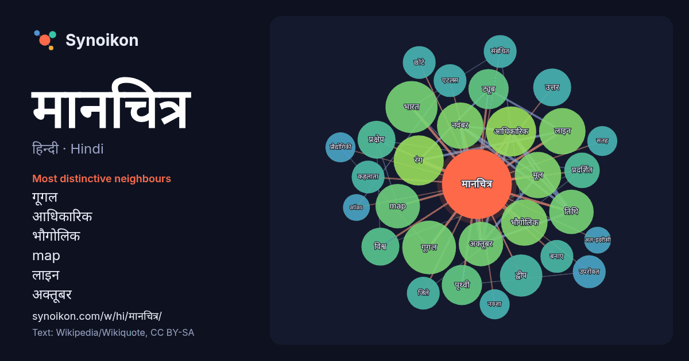

हिन्दी · Hindi · word of the day list
मानचित्र
“map” · The words found around it in 310 instances from Hindi Wikipedia, Wikiquote.

Most distinctive neighbours
- गूगल 16×
- आधिकारिक 13×
- भौगोलिक 12×
- map 12×
- लाइन 12×
- अक्तूबर 12×
- नवंबर 11×
- तिथि 11×
- रंग 11×
- ट्यूब 9.8×
- द्वीप 9.2×
- प्रक्षेप 8.9×
- मूल 8.4×
- पृथ्वी 8.1×
- एटलस 7.0×
- उपरोक्त 6.8×
- कहलाता 6.3×
- उत्तर 6.1×
- नक्शा 5.9×
- भारत 5.9×
× = how many times more often than in general Hindi Wikipedia text.
Most frequent neighbours
- गूगल 16
- भारत 15
- आधिकारिक 14
- रंग 14
- नवंबर 12
- भौगोलिक 12
- मूल 12
- लाइन 12
- map 11
- अक्तूबर 11
- तिथि 11
- द्वीप 10
- ट्यूब 9
- पृथ्वी 9
- उत्तर 8
- प्रक्षेप 8
- विश्व 8
- प्रदर्शित 7
- अमेरिका 6
- उपरोक्त 6
In context
- विपरीत मानचित्र किसी बड़े भूभाग को छोटे रूप में प्रस्तुत करते हैं जिससे एक नजर में भौगोलिक जानकारी और उनके अन्तर्सम्बन्धों की जानकारी मिल सके। मानचित्र को Wikipedia snippets · मानचित्र
- द्वारा गूगल मानचित्र वेबसाइट, गूगल राइड फाइंडर, गूगल ट्रांजिट और गूगल मानचित्र एपीआई के माध्यम से तीसरे पक्ष की वेबसाइटों में सन्निहित मानचित्रों सहित कई Wikipedia snippets · गूगल मानचित्र
- समतल सतह पर मानचित्र बनाने के लिए प्रकाश अथवा ज्यामितीय विधियों के द्वारा निर्मित अक्षांश-देशान्तर रेखाओं के जाल या भू-ग्रिड को मानचित्र प्रक्षेप (map Wikipedia snippets · मानचित्र प्रक्षेप
- विश्व मानचित्र पृथ्वी की अधिकांश या सभी सतह का मानचित्र है। विश्व का मानचित्र प्रस्तुत करने के लिए विभिन्न तकनीकें विकसित की गई हैं जिससे विविध तकनीकी Wikipedia snippets · विश्व मानचित्र
- ज़ीनो मानचित्र, उत्तरी अंध महासागर के उस मानचित्र को कहते हैं जिसका प्रकाशन 1558 में पहली बार वेनिस में निकोलो ज़ीनो द्वारा किया गया था। निकोलो ज़ीनो Wikipedia snippets · ज़ीनो मानचित्र
- स्थलाकृतिक मानचित्र अथवा भूपत्रक (अंग्रेज़ी:Topographic map) एक बड़े पैमाने पर बना मानचित्र होता है जो सामान्य उद्देश्य के लिये बनाया जाता है और इसमें Wikipedia snippets · स्थलाकृतिक मानचित्र
- एक क्षेत्रबहुल मानचित्र एक प्रकार का सांख्यिकीय विषयगत मानचित्र है जो मिथ्यारंग का उपयोग करता है, अर्थात, स्थानिक गणना इकाइयों के भीतर भौगोलिक विशेषता Wikipedia snippets · क्षेत्रबहुल मानचित्र
- १ की जो द्विआयामी सारणी या मानचित्र तैयार होता है उसे ही बिटमैप या बिट ऐरे कहते है। कंप्यूटर ग्राफिक्स में जब यह मानचित्र एक आयत होता है तब बिटमैप बनाकर Wikipedia snippets · बिट मानचित्र
More Hindi words
- इतिहास
- ईश्वर
- कार्य
- कुत्ता
- गर्मी
- गाना
- घंटी
- घड़ी
- घोड़ा
- चाय
- चित्रकला
- छाया
- जंगल
- जलवायु
- जीवन
- तूफ़ान
- दर्पण
- द्वीप
- नक्षत्र
- नमक
- परिवार
- पहाड़
- पानी
- पैसा
- प्रकृति
- बगीचा
- बिल्ली
- भाषा
- भोजन
- माता
- मृत्यु
- मौन
- रेगिस्तान
- रेलगाड़ी
- रोटी
- वर्षा
- विज्ञान
- शक्ति
- शरद
- शहद
- शहर
- सड़क
- सत्य
- समय
- सर्दी
- सेतु
- स्वर्ण
- स्वास्थ्य
- हृदय
Precomputed on 2026-10-09 with default settings (±5 words, medium corpus). The interactive map can refresh it with live data.